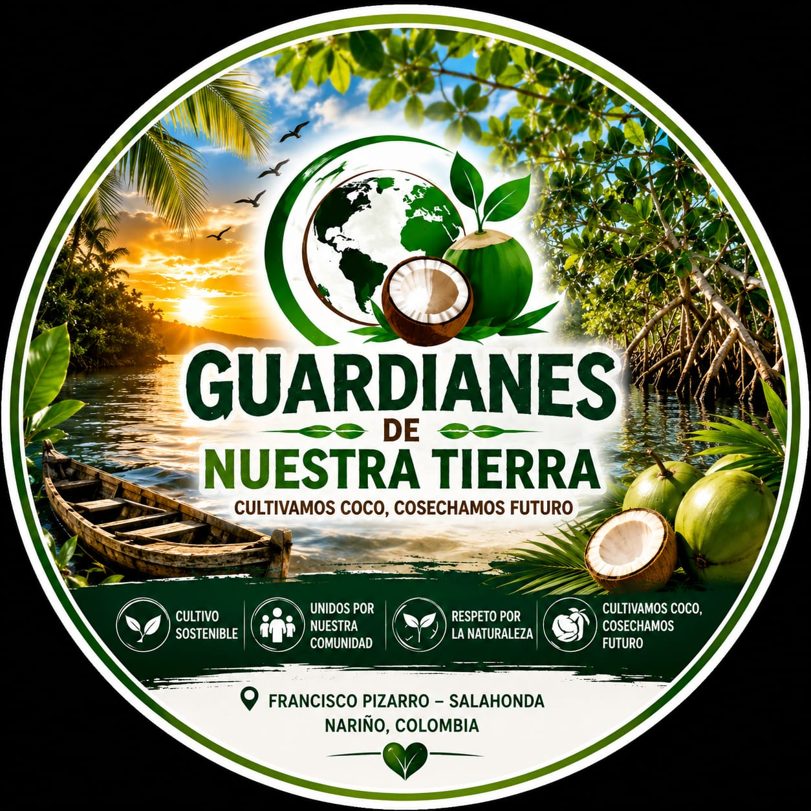
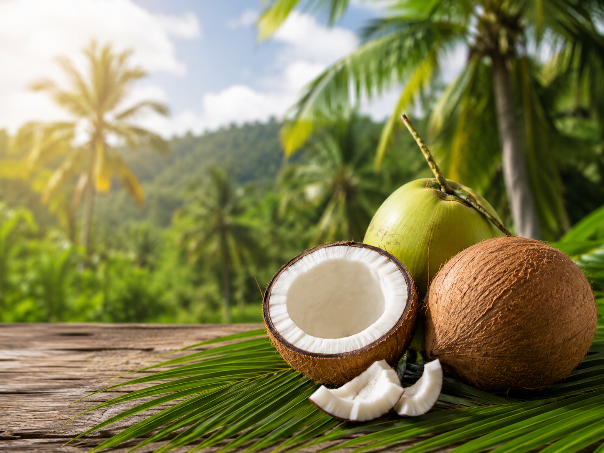

PRODUCCIÓN
Aprovechamos el coco de nuestro territorio mediante prácticas responsables y sostenibles que cuidan la tierra, el agua y nuestras raíces.

Somos una iniciativa comunitaria dedicada a la producción, transformación y comercialización sostenible del coco y sus derivados.
Una comunidad que transforma el coco en oportunidades para nuestro territorio.
Somos una iniciativa comunitaria de Francisco Pizarro, Nariño, comprometida con el aprovechamiento sostenible del coco y sus derivados.
Nuestro propósito es aprovechar de manera responsable el coco y transformarlo en productos naturales de calidad.
Buscamos generar ingresos, fortalecer nuestra economía local y contribuir al cuidado del medio ambiente.
Cultivamos, transformamos y aprovechamos el coco de manera responsable para generar oportunidades y cuidar nuestro territorio.
Unidas por un mismo propósito: cultivar oportunidades y cosechar futuro.
Aprovechamos el fruto de nuestro territorio para transformar el coco de manera sostenible, generando bienestar, ingresos y nuevas oportunidades para nuestra comunidad.

Aprovechamos el coco de nuestro territorio mediante prácticas responsables y sostenibles que cuidan la tierra, el agua y nuestras raíces.
Transformamos el coco en productos naturales como aceite, coco rallado y leche de coco, agregando valor a nuestro territorio.
Llevamos nuestros productos a familias, personas y pequeños negocios, fortaleciendo la economía local.
La falta de oportunidades laborales afecta a nuestra comunidad.
Queremos aprovechar mejor un recurso presente en nuestro territorio.
Buscamos producir utilizando los recursos naturales de manera responsable.
Productos naturales elaborados con el fruto de nuestro territorio.
Nuestra iniciativa busca generar ingresos sin dejar de lado el cuidado del medio ambiente.
Promovemos prácticas que permitan utilizar el agua de manera responsable.
Promovemos alternativas naturales para fortalecer nuestros cultivos.
Buscamos aprovechar mejor el coco y reducir desperdicios.
Trabajamos por un modelo que respete nuestro territorio y sus recursos.
Nuestra iniciativa nace en el territorio del Pacífico nariñense, donde el coco forma parte de nuestra identidad, nuestra cultura y nuestras oportunidades de futuro.
Desde Francisco Pizarro queremos demostrar que nuestros recursos naturales pueden convertirse en oportunidades económicas sostenibles para la comunidad.
Unidos para transformar nuestro territorio y construir nuevas oportunidades.
Somos una comunidad que cree en el trabajo colectivo, en el aprovechamiento responsable de nuestros recursos y en la construcción de un futuro sostenible.
Queremos generar ingresos sostenibles, fortalecer la economía local y promover el cuidado del medio ambiente mediante el uso responsable de los recursos naturales.
Conoce nuestra iniciativa, nuestros productos y el trabajo que estamos desarrollando desde Francisco Pizarro.
Francisco Pizarro
Nariño, Colombia
15 personas
1 territorio · 1 propósito
Producción sostenible
y cuidado ambiental